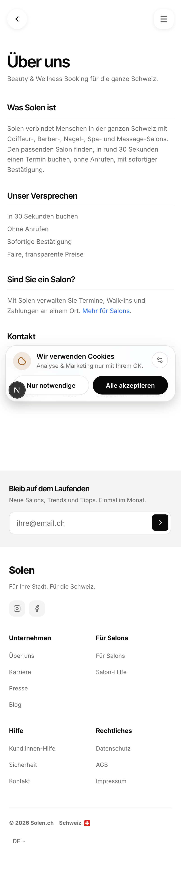
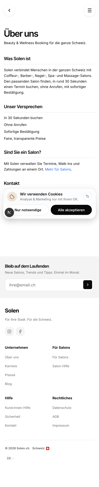

About page, both are photographs of the real page
Every word of body text on it is the light grey your system keeps for hints and timestamps. The paragraphs, the promise list, the subtitle. All of it. Left is the real page as it is right now. Right is the same page in the same browser with one line changed, the body colour. Nothing else was touched, so anything that looks the same is the same.
The live page has 13 pieces of text. Five are black, and they are the title and the four headings. The other eight are grey, which is everything on the page that is not a heading.
Your other two marketing pages use grey too, so this is not one rule broken once. What is different here is that About is the only one with no black body text at all. Why Solen is 26% grey, Partner is 49%, this page is 62%.
A. As it shipsbody #6B6B6B

B. Body in blackbody #0A0A0A

What I would do, and the cost of it. B, because a page whose whole job is telling people who you are should not be the quietest page you own. The cost is real: at full black the four headings stop leading, because heading and body then share a colour and only size separates them. If you pick B and it reads flat, the fix is the headings going up, not the body going back down.
Where I was wrong before I measured. I had this page as a lone offender against two clean siblings. Rendered, Partner is 49% grey, so grey body is normal here. The claim that survives is narrower, and the narrow one is what is above.
Two of your own locked documents disagree here, in writing. One, dated May, says body text is exactly this grey. The other, dated July, says this grey is never allowed on real copy. The later one wins by your own ordering, but I am not settling a written fight between two of your locks on my own.
Second thing, nothing to do with colour. This page is written in German only, typed straight into the page instead of coming from your translation files. All four languages serve the same German. Partner switches properly, so this is this page and not the whole site.